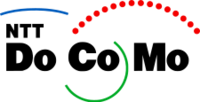
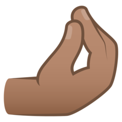
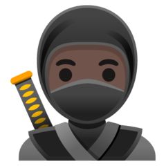

Indexer des Emoji
« 🍕 »
dans Elasticsearch pour trouver des pizzas !
@damienalexandre

PHP, Elasticsearch, Symfony, Emoji
Pourquoi des emoji ?
- Un texte seul porte difficilement un ton, une intonation, qu'un échange verbal permet
- Avec l'explosion des conversations SMS et numériques, nous avons adopté des Emoticons :
:-) :D :-( ^_^ ;-) <3
Le message qui a tout changé
19-Sep-1982 11:44 Scott E Fahlman
From: Scott E Fahlman
I propose that the following character sequence
for joke markers:
:-)
Read it sideways. Actually, it is probably more
economical to mark things that are NOT jokes,
given current trends. For this, use
:-(
Grosse créativité
(^_^) [o_o] (^.^) (".") ($.$) {-_-}
(╯°□°）╯︵ ┻━┻
¯\_(ツ)_/¯
( ͡° ͜ʖ ͡°)
Nos téléphones évoluent

En 1998, un opérateur Japonais introduit des icônes colorés dans les messages pour se démarquer de la concurrence.
176 pictogrammes de 12x12 pixels
- Tous les opérateurs s'y sont mis
- Chacun avec son propre jeu propriétaire...
- La transmission était sur 2 octets (en utilisant un range privé Unicode)
- Si vous étiez chez NTT DoCoMo, vous ne pouviez pas voir les emoji envoyés par votre ami chez SoftBank Mobile 😧
- Avec le temps, les opérateurs ont ajouté un mapping...

Unicode
- Standard informatique du texte depuis 1991
- Coordonné par le Consortium Unicode (organisation privée sans but lucratif)
- Commence à s'intéresser aux Emoji en 2007
La naissance des Emoji
- 855 emoji intégrés à Unicode 6.0 en 2010
- Les pictogrammes Japonais
- Quelques nouveaux
- Certains icônes déjà dans Unicode
🍢 🍤 🍥 🏯 👘 🎌 🗻 🎏
😑 😬 💩 🦄 🐙 🚙 🌦 🎸
Adoption
- Ajouté dans l'iPhone en 2008, au Japon uniquement 🇯🇵
- Support complet en 2011
- Tout le monde a suivi, d'Android à Windows
□ Support aujourd'hui □
- Apple iOS et macOS
- Android
- Windows 10
- Linux 🐧 Ubuntu 18.04
- caniemoji.com
- Problèmes : sans couleurs ⛇, tofu □, invalide �...
- Elasticsearch ?
Les code points
- U+1F355 est 🍕
- U+1F308 est 🌈
- U+1F427 est 🐧
Les Emoji dans Unicode
Les emoji sont comme du texte. C'est votre système d'exploitation qui est capable de les afficher en image.


Peu importe ce qui est affiché, c'est le code point qui porte le sens.
L'utilisation des emoji
Vous n'y échapperez pas !
- Word of the Year du Oxford English Dictionary 2015 : 😂
- World Emoji Day le 17 Juillet 🎉
- Supporté partout ! Saisie super simple et claviers dédiés sur mobile ⌨
- Emojipedia.org fait 45 millions de pages vues par mois
Oui, vos utilisateurs vont saisir 🍕 dans votre moteur de recherche !
Comment chercher comme Yelp
PUT meal/_doc/1
{
"title": "pizza"
}
GET meal/_search
{
"query": {
"match": {
"title": "🍕"
}
}
}Aucun résultat
C'est standard
- Unicode spécifie comment faire de la recherche (TR51)
- Chaque emoji doit être indexé avec ses annotations, et cela dans toutes les langues cibles
Annotations CLDR de 🍕
- En Anglais : cheese, pizza, slice
- En Français : fromage, part, pizza
Nous devons indexer "pizza"
quand il y a un emoji 🍕
C'est le boulot des synonymes !

Dans Elasticsearch
- Depuis 6.7 : Lucene 7.7.0 comprends les Emoji 🥰
- Entre 6.4 et 6.7 : Plugin officiel analysis-icu
- Avant 6.4 : 😵 Plugin maison 🔥 et plein de hack
Lucene 7.7 ❤️
Extrait des tests de Lucene :
/** simple emoji */
public void testEmoji() throws Exception {
BaseTokenStreamTestCase.assertAnalyzesTo(
a,
"💩 💩💩",
new String[] {"💩", "💩", "💩"},
new String[] {"<EMOJI>", "<EMOJI>", "<EMOJI>"}
);
}Emoji simple
GET _analyze
{
"text": ["🍕"],
"analyzer": "standard"
}Token 🍕
Ajout des synonymes
GET _analyze
{
"text": ["🍕"],
"tokenizer": "standard",
"filter": [
{
"type": "synonym",
"synonyms": [
"🍕 => 🍕, cheese, pizza, slice"
]
}
]
}Tokens 🍕 cheese pizza slice
Recherche fonctionnelle
Tokens 🍕 cheese pizza slice dans l'index
- Recherche avec "🍕" : match ✅
- Recherche avec "pizza" : match ✅
Liste de synonymes
- Le CLDR fourni les annotations dans toutes les langues
- Unicode Common Locale Data Repository
- Je fournis juste les fichiers de synonymes déjà prêts :
🐻 => 🐻, bear, bear face, face
🐨 => 🐨, bear, koala
🐼 => 🐼, face, panda, panda face
🐾 => 🐾, feet, paw, paw prints, print
🦃 => 🦃, bird, turkey
🥵 => 🥵, feverish, heat stroke, hot, hot face, red-faced, sweating
🥶 => 🥶, blue-faced, cold, cold face, freezing, frostbite, icicles
🐣 => 🐣, baby, bird, chick, hatching, hatching chick
🐤 => 🐤, baby, baby chick, bird, chick
🐥 => 🐥, baby, bird, chick, front-facing baby chick
🤞 => 🤞, cross, crossed fingers, finger, hand, luck
🤟 => 🤟, hand, ILY, love-you gesture
🌾 => 🌾, ear, grain, rice, sheaf of rice
👱♀ => 👱♀, blond-haired woman, blonde, hair, woman, woman: blond hair
🧓 => 🧓, adult, gender-neutral, old, older person, unspecified gender
👴 => 👴, adult, man, old
🧝♀ => 🧝♀, magical, woman elf
🧞 => 🧞, djinn, genie
...
C'est un peu plus complexe dans la vraie vie
Composition

-
Séquence ZWJ pour afficher un drapeau arc en ciel :
- 🏳 U+1F3F3
- ZWJ U+200D
- 🌈 U+1F308
ZWJ dans ES
GET _analyze
{
"text": ["🏳🌈"],
"tokenizer": "standard",
"filter": [
{
"type": "synonym",
"synonyms": [
"🏳🌈 => 🏳🌈, pride, rainbow, rainbow flag"
]
}
]
}Tokens 🏳🌈 pride rainbow flag
La jointure est bien connue d'Elasticsearch
Drapeaux
-
249 combinaisons basées sur ISO 3166-1 alpha-2
- Regional indicator symbol :
- 🇦 🇧 🇨 🇩 🇪 🇫 🇬 🇭 🇮 🇯 🇰 🇱 🇲 🇳 🇴 🇵 🇶 🇷 🇸 🇹 🇺 🇻 🇼 🇽 🇾 🇿
- 🇨 U+1F1E8 et 🇦 U+1F1E6 = 🇨🇦
- 🇨🇭 🇨🇳 🇩🇪 🇪🇸 🇫🇷 🇬🇧 🇮🇹 🇯🇵 🇰🇷 🇷🇺 🇺🇸...
Drapeaux
-
D'autres exemples :
- 🇮🇨 IC Canary Islands
- 🇽🇰 XK Kosovo
- 🇺🇳 UN United Nations
- 🇪🇺 EU European Union
- 🇹🇼 TW Taiwan, caché en Chine
Drapeaux dans ES
GET _analyze
{
"text": ["🇪🇺"],
"tokenizer": "standard",
"filter": [
{
"type": "synonym",
"synonyms": [
"🇪🇺 => 🇪🇺, flag: European Union"
]
}
]
}Tokens 🇪🇺 flag European Union
Combinaisons lues par Elasticsearch
Drapeaux subdivisions
-
ISO 3166-2 subdivisions administratives
- 🏴 GB-SCT Écosse
- 🏴 GB-WLS Wales
- + de 3000 possibilitées
- Seulement 4 supportées actuellement
- On l'aura notre emoji BZH !
🏴 GB-SCT explosé
- U+1F3F4 🏴
- U+E0067 TAG g
- U+E0062 TAG b
- U+E0073 TAG s
- U+E0063 TAG c
- U+E0074 TAG t
- U+E007F CANCEL TAG
Subdivisions dans ES
GET _analyze
{
"text": ["🏴"],
"tokenizer": "standard",
"filter": [
{
"type": "synonym",
"synonyms": [
"🏴 => 🏴, flag, Scotland",
"🏴 => 🏴, flag, Bretagne, BZH"
]
}
]
}Tokens 🏴 flag Scotland
Très bon support
Les modificateurs
-
Fitzpatrick
- 🤘 U+1F918
- 🤘🏽 U+1F918 + U+1F3FD
Fitzpatrick dans ES
GET _analyze
{
"text": ["🤘🏽"],
"tokenizer": "standard",
"filter": [
{
"type": "synonym",
"synonyms": [
"🤘🏽 => 🤘🏽, horns, medium skin tone"
]
}
]
}Tokens 🤘🏽 horns medium skin tone
Supporté aussi mais synonyme à affiner
Sélecteur de variation
-
Variations, exemple avec HEAVY BLACK HEART
- ❤ U+2764 en texte
- ❤️ U+2764 + U+FE0F en Emoji
- 🏳 U+FE0F ZWJ 🌈 !== 🏳 ZWJ 🌈
Variations ES
GET _analyze
{
"text": ["🏳️🌈" , "❤️"],
"tokenizer": "standard",
"filter": [
{
"type": "synonym",
"synonyms": [
"🏳🌈 => 🏳🌈, pride, rainbow, rainbow flag",
"❤ => ❤, heart, red heart"
]
}
]
}Tokens 🏳️🌈 ❤️
Nos synonymes ne matchent pas !
Variations ES
On supprime les variateurs AVANT le filter de synonyme
{
"type": "pattern_replace",
"pattern": "\\uFE0E|\\uFE0F",
"replace": ""
}
Tokens 🏳️🌈 ❤️ pride rainbow heart...
Les nouveaux emoji
- Nouvelle version majeure d'Unicode tous les ans
- Elasticsearch 7.10.2 = Lucene 8.7.0 = Unicode 11
- Unicode 13 actuellement (Mars 2020)
Nouveaux emoji dans ES
GET _analyze
{
"text": ["🤌🏽", "🥷🏿"]
}
Tokens 🤌 🏽 🥷 🏿 séparés !
 
Mais globalement c'est très fonctionnel.
Récapitulons
- Installer un fichier de synonymes
- Supprimer les sélecteurs de variation
- Utiliser un token filter synonym
$ wget https://github.com/jolicode/emoji-search/raw/master/synonyms/cldr-emoji-annotation-synonyms-en.txt
$ mv cldr-emoji-annotation-synonyms-en.txt /etc/elasticsearch/analysis/
PUT /tweets
{
"settings": {
"analysis": {
"filter": {
"english_emoji": {
"type": "synonym",
"synonyms_path": "analysis/cldr-emoji-annotation-synonyms-en.txt"
},
"emoji_variation_selector_filter": {
"type": "pattern_replace",
"pattern": "\\uFE0E|\\uFE0F",
"replace": ""
}
},
"analyzer": {
"english_with_emoji": {
"tokenizer": "standard",
"filter": [
"lowercase",
"emoji_variation_selector_filter",
"english_emoji"
]
}
}
}
}
}
GET tweets/_analyze
{
"analyzer": "english_with_emoji",
"text": "🍕 🍍"
}🍕 cheese pizza slice 🍍 fruit pineapple

Aller plus loin...
Gérer les emoticons
:-) :D :-( ^_^ ;-) <3
On va simplement mapper les emoticons vers leurs emoji respectifs avant la tokenisation !
Emoticon Mapping
:p ressemble à 😛
:P => 😛
8-) => 😎
:s => 😒
:| => 😐
O:-D => 😇
</3 => 💔
:'-| => 😢
Un nouveau char_filter
"char_filter": {
"emoticons_char_filter": {
"type": "mapping",
"mappings_path": "analysis/emoticons.txt"
}
},Fichier de mapping disponible : https://github.com/jolicode/emoji-search/blob/master/emoticons.txt
Un nouveau char_filter
"analyzer": {
"english_with_emoji": {
"char_filter": ["emoticons_char_filter"],
"tokenizer": "standard",
"filter": [
"lowercase",
"emoji_variation_selector_filter",
"english_emoji"
]
}
}GET tweets/_analyze
{
"analyzer": "english_with_emoji",
"text": "Sarcasm ;-)"
}sarcasm 😉 face wink winking face
Des informations d'intention / émotion en plus
=
Une meilleure expérience de recherche
Pour résumer
- Les emoji sont des lettres comme les autres 🔠
- Leur recherche se base sur des synonymes 👥
- Le CLDR produit ses annotations pour nous 📝
- Un fichier de synonymes tout prêt disponible ✅
- Il y a plein de combinaisons possibles ♾️
- Supportez les emoji partout (sauf les mots de passe) 🔒
Merci pour votre attention 🤘
@damienalexandre
https://github.com/jolicode/emoji-search/